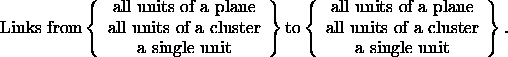
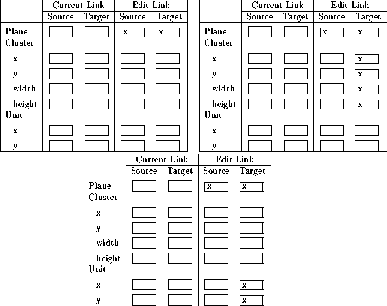

A link always leads from a source to a target. To generate a fully connected net (connections from each layer to its succeeding layer, no shortcut connections), it is only sufficient to press the button after the planes of the net are defined. Scrolling through the link list, one can see that every plane i is connected with the plane i+1. The plane number shown in the link editor is the same as the plane number given by the plane editor.
If one wants more complicated links between the planes one can edit them directly. There are nine different combinations to specify link connectivity patterns:

Figure  shows the display for the three possible input
combinations with (all units of) a plane as source. The other
combinations are similar. Note that both source plane and target plane
must be specified in all cases, even if source or target consists of a
cluster of units or a single unit. If the input data is inconsistent
with the above rules it is rejected with a warning and not entered
into the link list after pressing or
shows the display for the three possible input
combinations with (all units of) a plane as source. The other
combinations are similar. Note that both source plane and target plane
must be specified in all cases, even if source or target consists of a
cluster of units or a single unit. If the input data is inconsistent
with the above rules it is rejected with a warning and not entered
into the link list after pressing or  .
.

With the Move parameters one can declare how many steps a cluster or a unit will be moved in x or y direction within a plane after the cluster or the unit is connected with a target or a source. This facilitates the construction of receptive fields where all units of a cluster feed into a single target unit and this connectivity pattern is repeated in both directions with a displacement of one unit.
The parameter dx (delta-x) defines the step width in the x direction and dy (delta-y) defines the step width in the y direction. If there is no entry in dx or dy there is no movement in this direction. Movements within the source plane and the target plane is independent from each other. Since this feature is very powerful and versatile it will be illustrated with some examples.